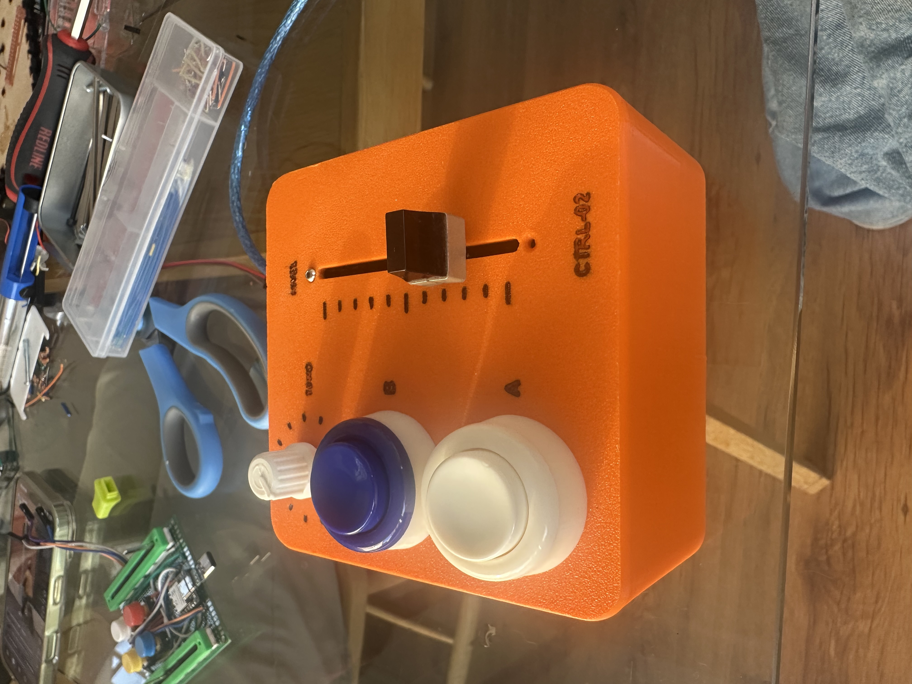
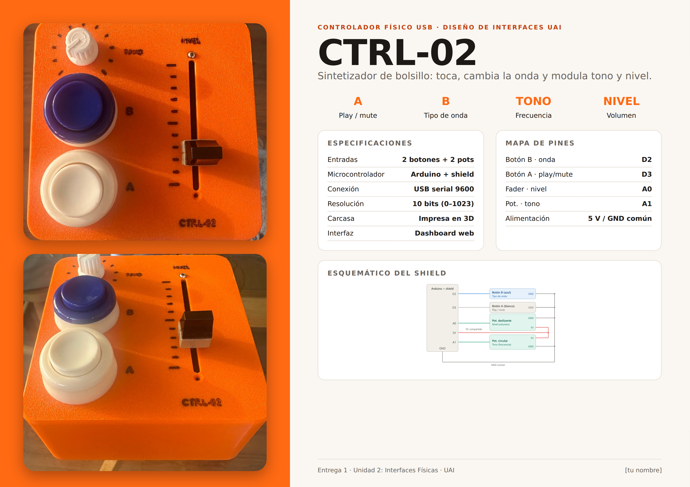
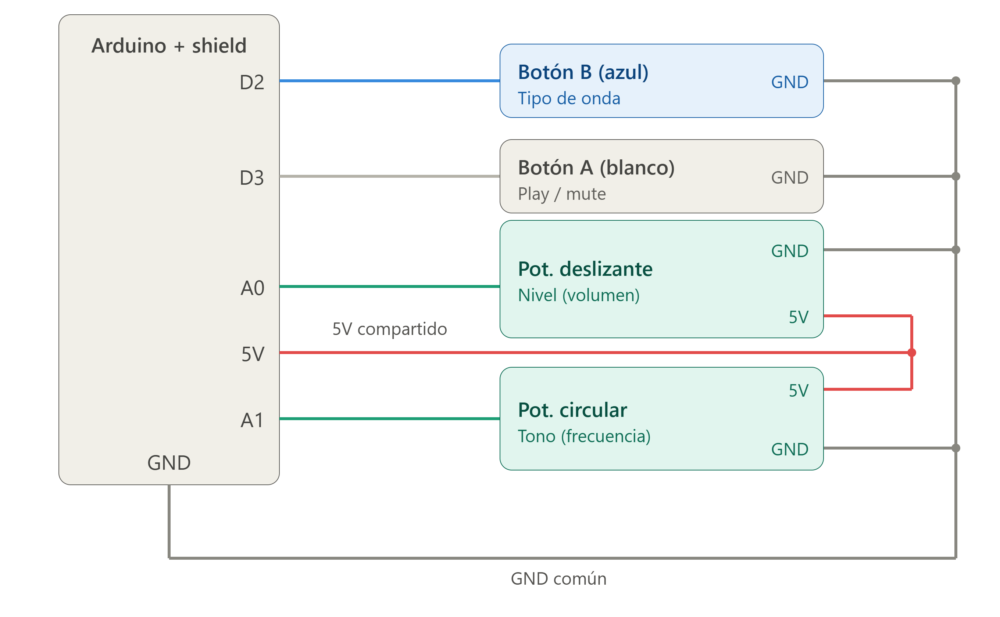
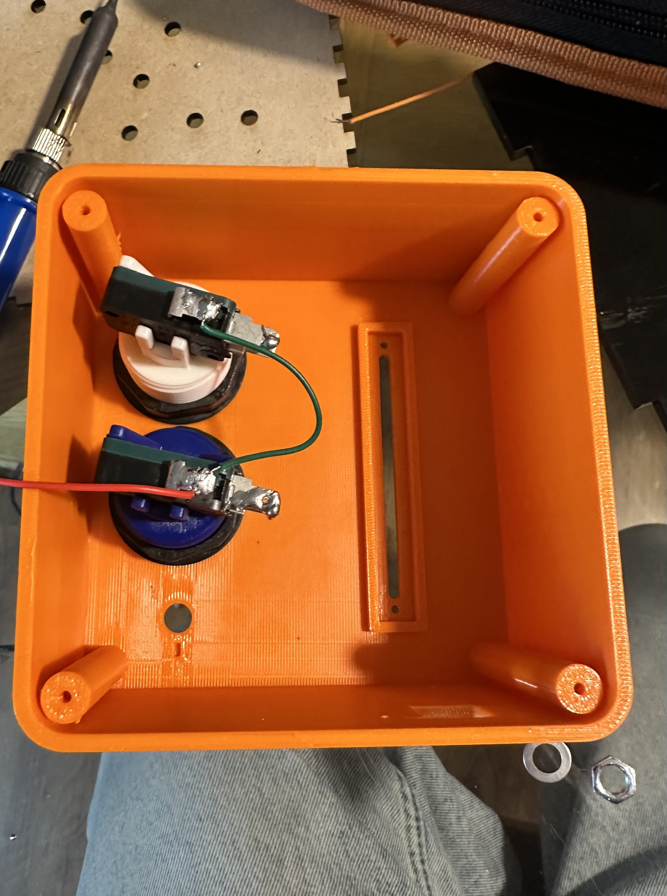
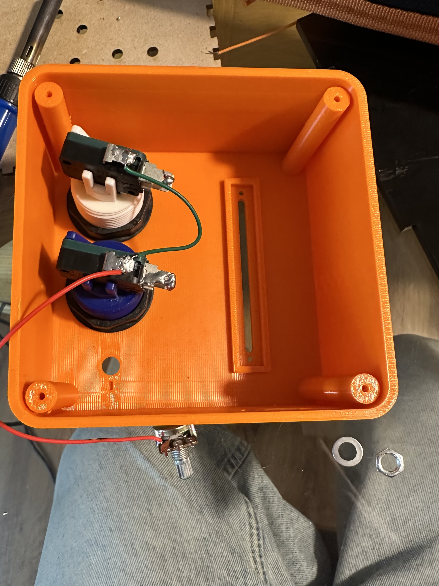
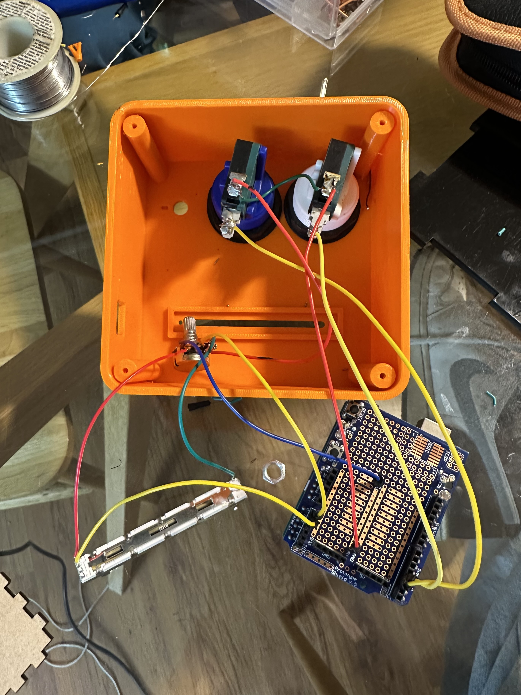
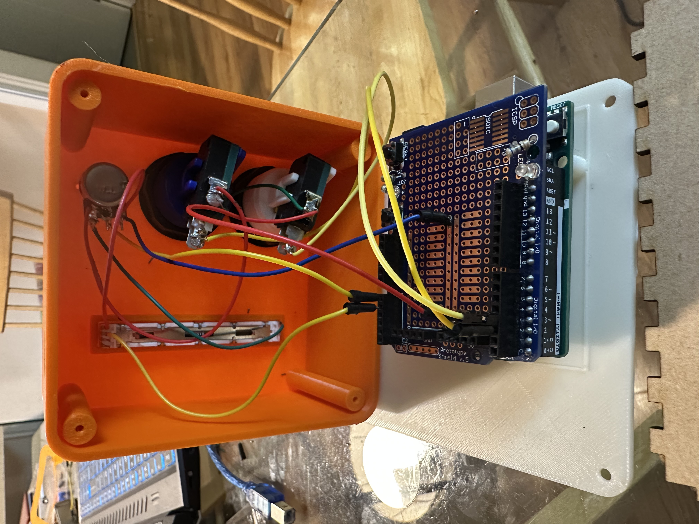
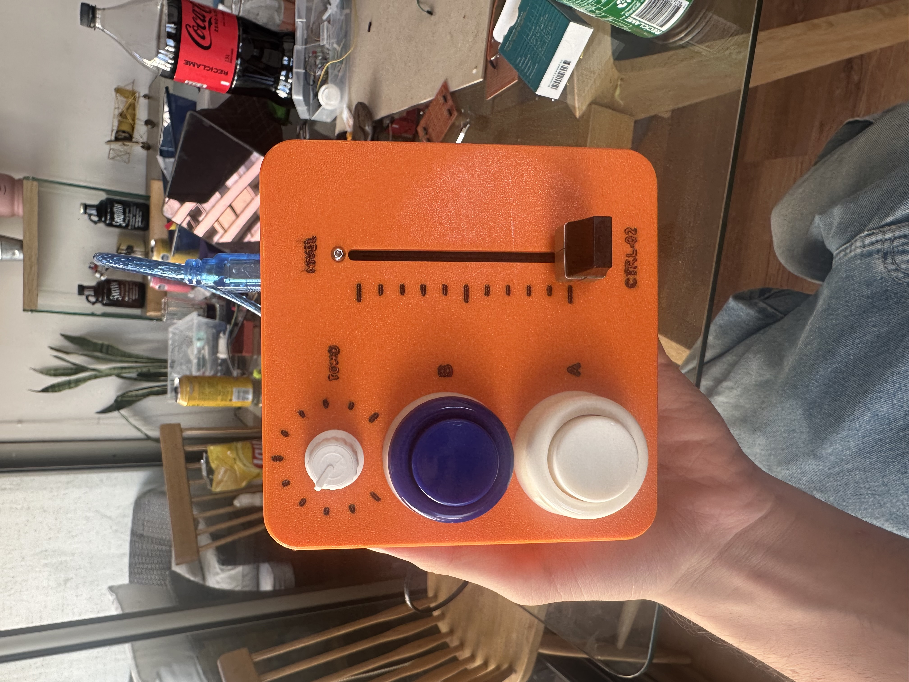

CTRL-02
Controlador físico USB que toca, cambia de onda y modula tono y volumen. Por Martin Donoso.

Controlador físico USB que toca, cambia de onda y modula tono y volumen. Por Martin Donoso.
CTRL-02, controlador físico para la Entrega 1 de Diseño de Interfaces (Unidad 2, Interfaces Físicas, UAI). Diseñado y construido por Martin Donoso.
El controlador conectado por USB al computador, moviendo el dashboard en tiempo real: el botón A activa y silencia el sonido, el botón B cambia el tipo de onda, la perilla ajusta la frecuencia y el fader el volumen.
Ver en YouTube
Resumen del hardware: funciones, especificaciones y mapa de pines.

Conexiones del shield: los botones usan resistencia pull-up interna del Arduino y comparten un GND común; ambos potenciómetros comparten 5 V.

Carcasa impresa en 3D, soldadura de los contactos de los botones, cableado hacia el shield y ensamble final. Toca una foto para ampliarla.




